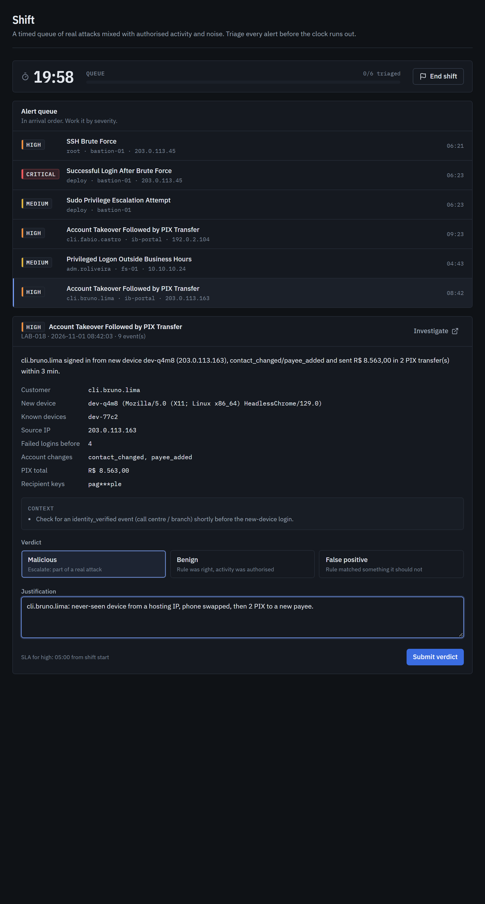
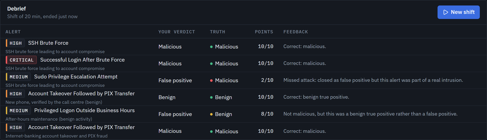
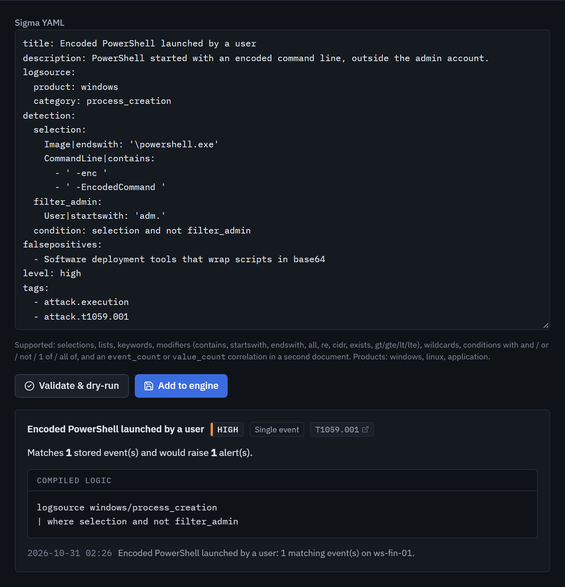
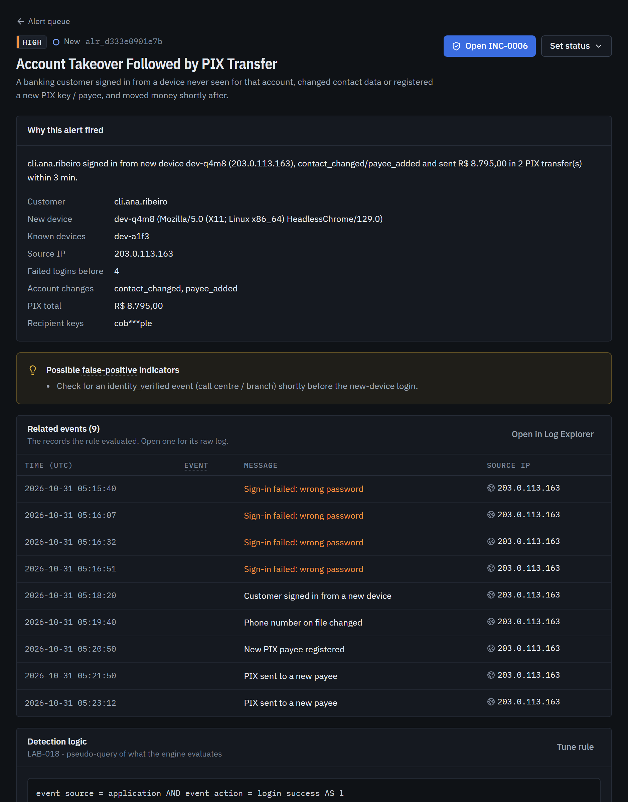
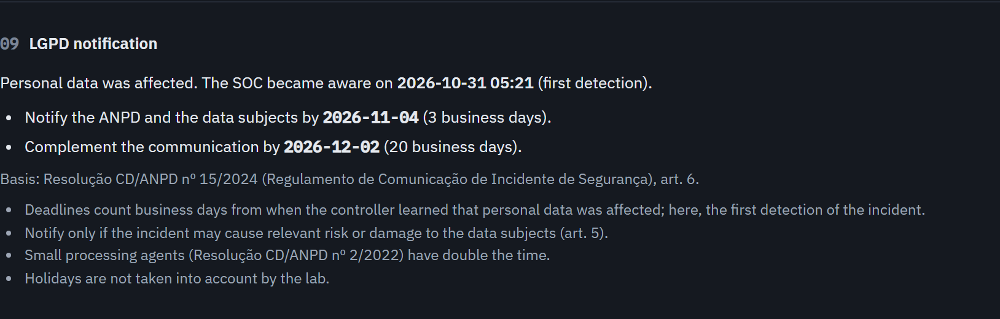
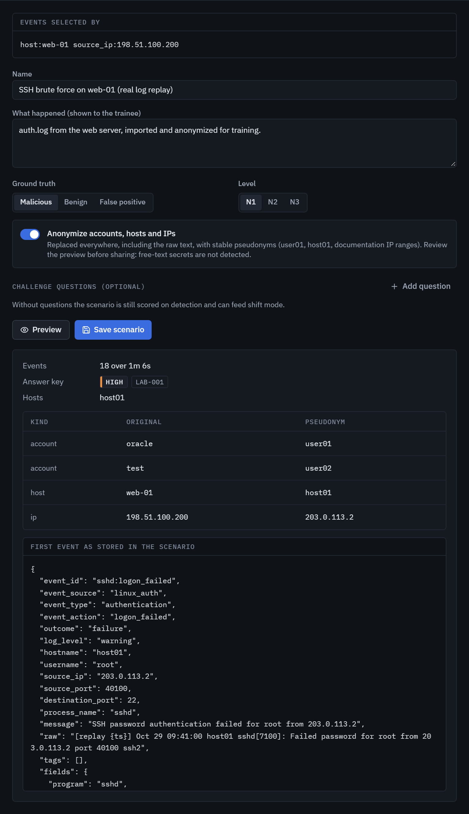

Antes de salvar um ajuste, o lab reexecuta todos os cenários com a regra atual e com a proposta. Limiar da força bruta de 6 para 15: o ruído cai, o password spraying passa, e o teste reprova.
Uma fila cronometrada mistura intrusões, atividade autorizada e falsos positivos. Cada alerta pede veredito e justificativa, contra o SLA da severidade.
Shift › fila ao vivoSIMULATION

SOC Investigation Lab
04 / 09
1Ingest
2Detect
3Respond
4Report
02 · Modo plantão · debriefing
Fechar um ataque como ruído custa caro.
No fim, a verdade de cada alerta aparece. Acurácia vale 60% da nota e um ataque fechado como ruído zera aquele alerta. Escalar ruído para resposta a incidentes também tira pontos.
Nota do plantão
83/100
Ataques perdidos
1
Notas verificáveis
100%
Shift › debriefingSIMULATION

O erro mais caro do plantãoA escalada de privilégio via sudo foi fechada como falso positivo. Ela fazia parte da mesma intrusão SSH: 2/10 pontos e um ataque que seguiria ativo.
Nota = acurácia 60% · SLA da severidade 20% · justificativa verificável 20%
SOC Investigation Lab
05 / 09
1Ingest
2Detect
3Respond
4Report
03 · Regras Sigma escritas por você
Escreva em Sigma. Teste nos eventos. Coloque no motor.
A regra passa por dry-run nos eventos do lab, entra no motor ao lado das 18 nativas, participa do teste de regressão e exporta para qualquer SIEM.
Detection rules › new Sigma ruleSIMULATION

SOC Investigation Lab
06 / 09
1Ingest
2Detect
3Respond
4Report
04 · Contexto brasileiro
O golpe do PIX, no log do internet banking.
Dispositivo nunca visto, troca do telefone, favorecido novo e duas transferências em 3 minutos. A regra LAB-018 correlaciona a sequência inteira.
Alert › LAB-018 · account takeover followed by PIX transferSIMULATION

SOC Investigation Lab
07 / 09
1Ingest
2Detect
3Respond
4Report
04 · Contexto brasileiro · LGPD
E o prazo da ANPD já sai no relatório.
Marcou no incidente que houve dados pessoais afetados? O relatório calcula a comunicação à ANPD e aos titulares, conforme a Resolução CD/ANPD nº 15/2024.
Dia 0
Primeira detecção: a ciência do incidente
3 dias úteis
Comunicar a ANPD e os titulares dos dados
+20 dias úteis
Complementar a comunicação com as informações que faltaram
Incident report › 09 LGPD notificationSIMULATION

Referência didática, não orientação jurídica. Feriados não entram na conta.
SOC Investigation Lab
08 / 09
1Ingest
2Detect
3Respond
4Report
05 · Cenários a partir de logs reais
Seu log real vira um cenário de treino.
Uma consulta no Log Explorer seleciona os eventos. O lab anonimiza contas, hosts e IPs, calcula o gabarito com o motor e exporta em JSON para a turma.
Log explorer › save as scenarioSIMULATION

SOC Investigation Lab
09 / 09
1Ingest
2Detect
3Respond
4Report
Open source · offline · dados 100% sintéticos
Baixe, rode e quebre as regras de propósito.
App desktop para Windows e Linux, sem conta, sem nuvem e sem chave de API. Todos os eventos usam uma empresa fictícia e faixas de IP de documentação.